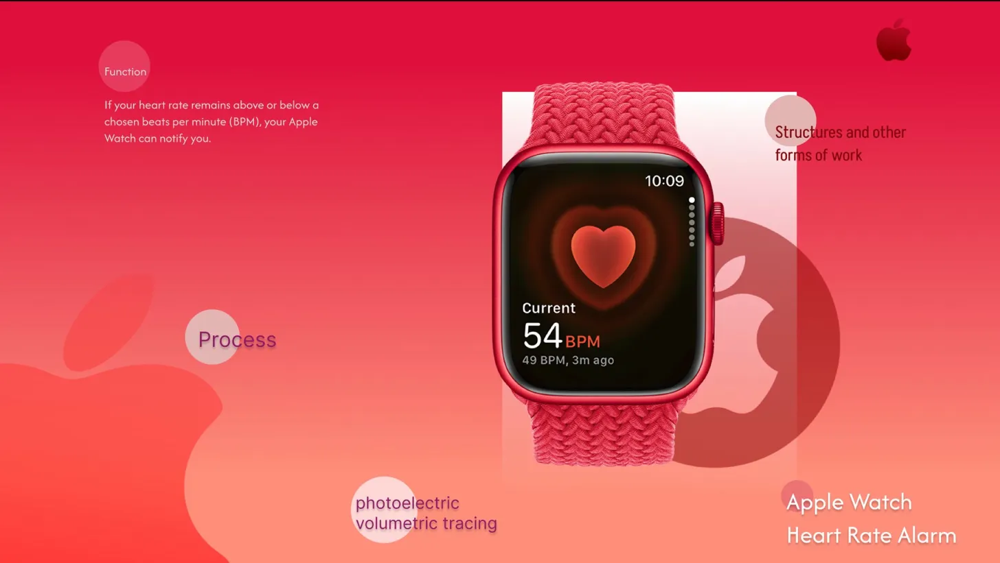

At what point does a number become something you cannot ignore?
The Apple Watch Heart Rate Alarm UI raises a fundamental question in health interaction design: how does a visual system communicate urgency without creating panic?
This project analyses the information hierarchy, colour psychology, and cognitive load management embedded in Apple's heart rate notification system — examining how every design decision operates under the constraint of critical seconds.
Apple's use of saturated red (#FF3B30) for abnormal readings exploits pre-attentive processing — the visual system flags the anomaly before conscious attention arrives. The gradient from warning amber to alarm red encodes escalating urgency without requiring the user to read a single word.
Colour PsychologyThe BPM number dominates at 72px. Secondary context (timestamp, previous reading) is reduced to 17px — a 4:1 ratio that ensures the critical datum lands in peripheral vision even during a health crisis. This hierarchy is not aesthetic; it is physiological.
Visual HierarchyThe underlying sensing mechanism — PPG (photoplethysmography) — uses green LED light reflected off blood vessels to detect pulse rate. The design communicates this through pulsing animation rather than technical explanation, translating complex biomedical feedback into a legible emotional rhythm.
Health IxDBeyond the notification itself, the system embeds decision architecture: the alarm offers two actions (OK / Add to Health), each with deliberate friction weighting. "OK" dismisses; adding to Health requires a second tap — a pattern that protects data integrity during moments of impaired cognition.
Interaction ArchitectureDocumented every state transition in the heart rate alarm flow — from background monitoring through escalating notification levels to the user response decision.
Rebuilt the Apple Watch UI from observation in Figma, annotating each design decision: typographic scale, colour assignment, animation timing, and touch target sizing.
Applied Miller's Law and Fitts's Law to quantify the interface's efficiency under stress conditions — measuring information density against the constraints of diminished attentional capacity.
Researched PPG sensing methodology to connect the hardware mechanism (photoelectric volumetric tracing) to the interface decisions, understanding why the pulsing visual metaphor was chosen over a static readout.
"A number only demands action when the interface removes all other options."
"Red works because it is used once — only when the threshold is crossed."
"The heartbeat animation isn't decoration — it's the metric itself, made legible."
Full annotated Figma file available — includes all interaction states, component breakdown, and colour annotation system.